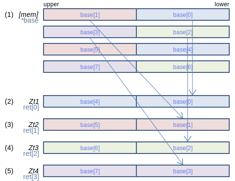
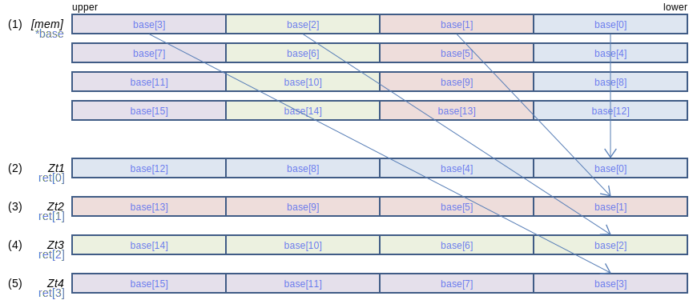
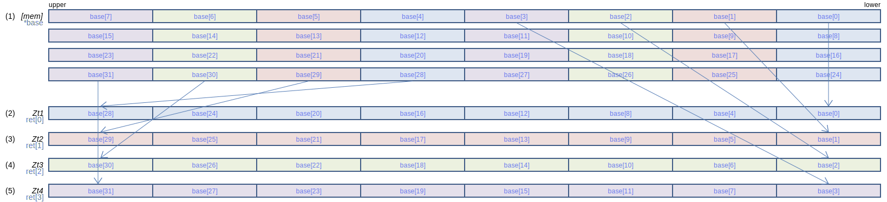
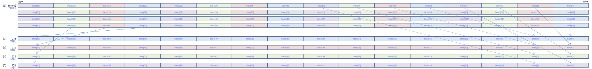
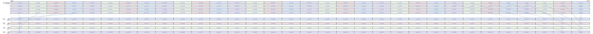

SVE Instruction List by Dougall Johnson
LD4D (scalar plus scalar): Contiguous load four-doubleword structures to four vectors (scalar index)
LD4D { Zt1.D, Zt2.D, Zt3.D, Zt4.D }, Pg/Z, [Xn, Xm, LSL #3] (SVE (SME
svfloat64x4_t svld4[_f64](svbool_t pg, const float64_t *base)
svint64x4_t svld4[_s64](svbool_t pg, const int64_t *base)
svuint64x4_t svld4[_u64](svbool_t pg, const uint64_t *base)
128-bit SVE
Load and deinterleave groups of four interleaved 64-bit values from the memory operand (1) into the 64-bit elements of four consecutive registers (2), (3), (4), and (5). If the predicate bit corresponding to an element in (2), (3), (4), and (5) is zero, those four contiguous loads are skipped, and cannot cause a fault, and the elements are set to zero.
256-bit SVE
Load and deinterleave groups of four interleaved 64-bit values from the memory operand (1) into the 64-bit elements of four consecutive registers (2), (3), (4), and (5). If the predicate bit corresponding to an element in (2), (3), (4), and (5) is zero, those four contiguous loads are skipped, and cannot cause a fault, and the elements are set to zero.
512-bit SVE
Load and deinterleave groups of four interleaved 64-bit values from the memory operand (1) into the 64-bit elements of four consecutive registers (2), (3), (4), and (5). If the predicate bit corresponding to an element in (2), (3), (4), and (5) is zero, those four contiguous loads are skipped, and cannot cause a fault, and the elements are set to zero.
Larger sizes
1024-bit SVE
Load and deinterleave groups of four interleaved 64-bit values from the memory operand (1) into the 64-bit elements of four consecutive registers (2), (3), (4), and (5). If the predicate bit corresponding to an element in (2), (3), (4), and (5) is zero, those four contiguous loads are skipped, and cannot cause a fault, and the elements are set to zero.
2048-bit SVE
Load and deinterleave groups of four interleaved 64-bit values from the memory operand (1) into the 64-bit elements of four consecutive registers (2), (3), (4), and (5). If the predicate bit corresponding to an element in (2), (3), (4), and (5) is zero, those four contiguous loads are skipped, and cannot cause a fault, and the elements are set to zero.
Report mistakes or give feedback
Inspired by and based on the x86/x64 SIMD Instruction List by Daytime.